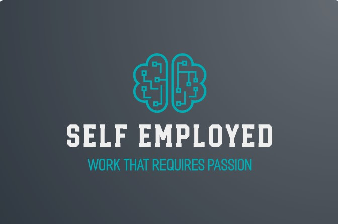

Why me?
Business analyst & Business Technology Specialist.
About
- Date of birth: 5/06/2003
- LinkedIn: https://www.linkedin.com/in/azeez-odebiyi-3538871b7
- Phone: (289) 933-4514
- City: Greater Toronto Area, ontario, Canada
- Age: 20
- Education: Computer science General, Bachelors
- Email: azeezod@icloud.com
Computer focused individual, quick learner, team leader and worker. Eager to learn, gain valuable experience and grow with companies and institutions who have enviable core values and work ehtic.
Skills
Resume
Education
OSSD
2019 - 2020
Toronto international College, Toronto, ON
Bachelor of Science: Computer Science
2021 - 2025
University of Windsor, Windsor, ON
Professional Experience
Self-Employed Full Stack Software Developer
January 2023 - ongoing
-
- Initiated, planned, and executed several complex projects independently, showcasing advanced project management, full-stack engineering skills, and strong discipline.
- InstantDub: Developed a Python project capable of translating video content from various languages into English, while retaining the original speaker's voice. This tool has far-reaching implications for education, content accessibility, and entertainment industries.
- Chatbud: Created a mobile application with React Native that enables users to interact with an AI chatbot via text and voice, designed to support customer service needs and offer companionship for users.
- Excellent communication skills, capable of presenting complex technical information to both technical and non-technical audiences.
- Web Application: Developed multiple comprehensive web applications utilizing React,django,flask etc for the frontend and Node, Express,python etc for backend/server.
Senior Data Analyst
June 2019 - September 2021
Nigerian National Petroleum Corporation

- Designed and developed a comprehensive e-commerce website for station and store while ensuring a seamless user experience.
- Coordinated with managers and accountants to design spreadsheet and platforms that simplified what used to be hours of calculations into mere seconds while also meeting high standards, user accessibility and seamless usage.
- Assisted in increasing customers by providing an online presence and an online interaction system.
- implemented user testing and Feedback.
- Displayed excellent time management by frequently delivering on time even on occasions when management requested out of scope features.
Accounting Intern
2018 - June 2019
Taibod petroleum ltd
- One of 2 Accounting personnel available on site.
- Calculated daily finances of the multi-million naira valued company including AGO , PMS and other Petroleum products.
- Calculated profit, assessed budgets and quarterly projections, calculated overage
- Negotiated with and scheduled various suppliers that met companies standards for product deliveries.
- Aided in stocking company materials and machinery and found the best prices while still maintaining product quality.
- Studied trends which helped company Smash previous projections and break 'even' within first 10 months of operation.
- Promoted to senior Data analyst
Achievements
Below are a list of Achievements i have attained
Advanced Ms Office operation
Trained extensively in operation and Navigation of office suite to solve assinged tasks swiftly and efficiently.
Exemplary Performance and Leadership
In the 4-month performance and leadership seminar, I embarked on a transformative journey of self-discovery and skill development. Through engaging workshops, simulations, and coaching sessions, I enhanced my communication, decision-making, and team management abilities. With the guidance of experienced mentors and the support of my peers, I set personal goals, grew both personally and professionally, and forged meaningful connections for a successful future.
Personal achievements
In my non-technical professional role, I received the Employee of the Month award multiple times, an acknowledgement of my dedication, discipline, and consistent performance. These recognitions bear testimony to my commitment to excellence and my ability to contribute significantly to my team. Perhaps the most significant achievement of my schooling years was being entrusted with the leadership of my schoolmates in Nigeria due to my leadership skills and rationality that set me apart from my peers. As a school prefect, I was responsible for leading by example, maintaining order, and facilitating communication between students and school administration. These leadership experiences and recognitions not only highlight my dedication and discipline but also illustrate my strong leadership skills, capacity for responsibility, and my ability to consistently deliver exceptional results.
Contact
Hello!! thank you for taking the time to go through my Website, please contact me for further questions or to reach out! Thank you!